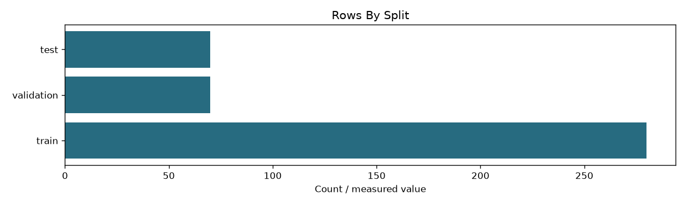

step 05 classification/inspection
Filter measurements
documents
420
columns
['doc_id', 'class_id', 'class_name', 'split']
csv_bytes
19637
duplicate_grouping
Internal only; retained during split generation
all_text_labels_and_splits_preserved
True
existing_classifier_arrays_unchanged
True

rows_by_split